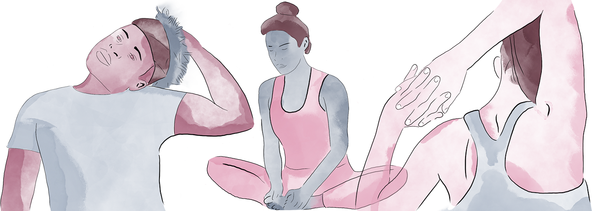

Back
BackStretch
Set a timer for 5 minutes. Choose one of these examples or come up with your own. Take a deep breath and get deeper in the stretch.
Sideways Neck Stretch
With your head slightly forward, slowly tilt your ear toward the shoulder on the same side until you feel a stretch. Hold it for about 10 seconds, and slowly bring your head back up and do the other side. You can increase the stretch by using the hand on the tilting side to gently pull your head down.
Butterfly Stretch
This one loosens up your inner thighs, groin, hips, and knees. Sit on the floor or a mat and bring your feet together so that your soles touch and your knees bend to opposite sides. With a straight spine, grasp your feet, then lean slowly forward and gently push your thighs down with your elbows until you feel the stretch along your inner thighs.
Chest and Shoulder Stretch
Interlace your fingers with bent elbows and put your hands behind your head. Move your elbows gently backward and squeeze your shoulder blades together. You can move your hands to the top of your head -- or a few inches above your head -- to affect different parts of your shoulders and chest.